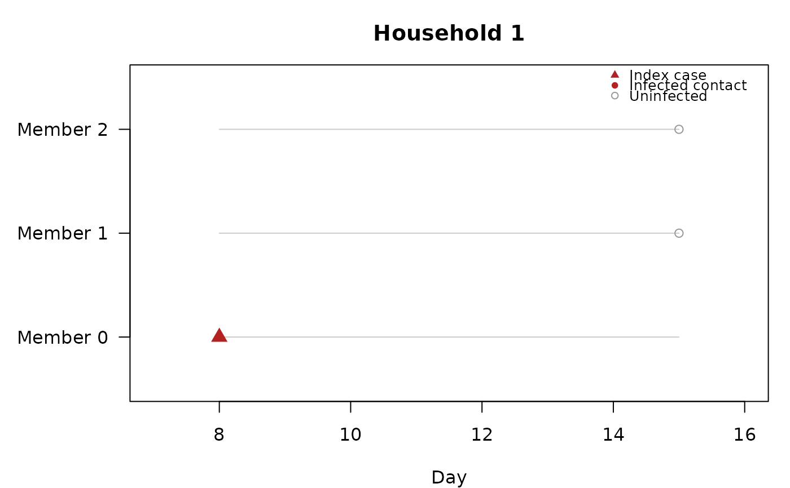

Visualizes the infection timeline for a single household. The index case is shown as a filled triangle, infected contacts as filled circles at their (imputed) onset times, and uninfected contacts as open circles spanning their follow-up period.
Examples
# \donttest{
data(inputdata)
fit <- household_dynamics(inputdata, ~sex, ~age,
n_iteration = 1000, burnin = 500, thinning = 1)
#> The running time is 2 seconds
plot_household(fit, hh_id = 1)

# }